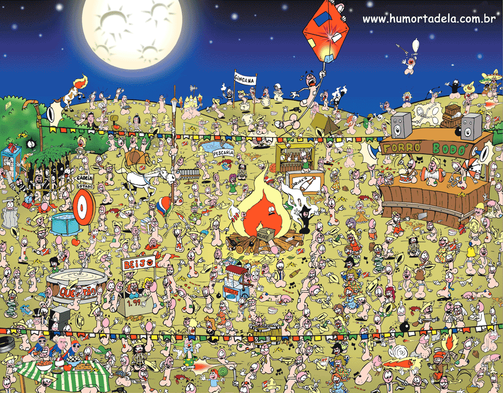
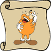
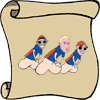
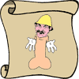
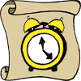

« Todos os jogos
| Onde está o Molly? — Jogo 6
(cópia offline — arquivo HumorTadela)

Tentativas:
0
Encontrados:
0
O que você precisa encontrar:
Molly

Tadelino

Bonde do Tigrão
Sergio Mallandro

Madruga
ACM
João Bobo
Revista
Lâmpada

Relógio
Desentupidor
Ê cabeção
Muito bem!!
Você achou todos os personagens!
compartilhar